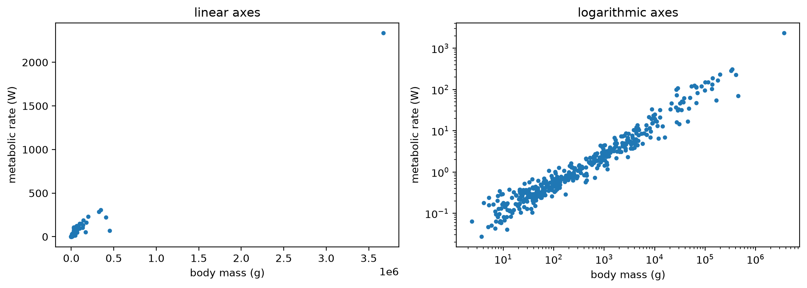

Evidence · Part 2
On linear axes the elephant sets the scale and the other 400 mammals collapse into a corner. On log axes they spread out evenly, and the cloud becomes a straight line. Always plot before fitting.